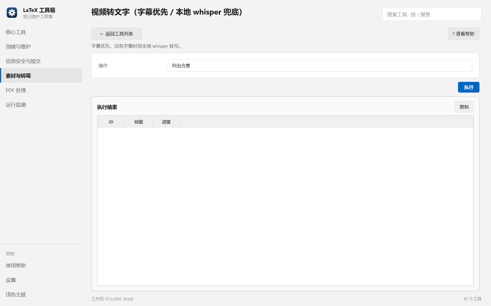

帮助目录 · 素材与转写
给一个视频链接，优先取字幕；没有字幕就用本地 whisper 转写。产物按合集归档，可断点续做。
| 面板入口 | 素材与转写 → 卡片「视频转文字」→ 选操作 → 执行 |
|---|---|
| 命令行 | python tools/video2text/video2text.py |

默认操作是「列出合集」（只读）；选「转写视频」才会露出二十来项参数。
| 项 | 说明 |
|---|---|
| 操作 | 列出合集 / 转写视频 / 补做失败项 / 导出合集 ZIP / 同步标题文件夹 / 锁状态诊断。 |
| 视频地址 | BV 号或完整链接。 |
| 取源方式 | 默认（先字幕后 whisper）/ subtitles（只要字幕）/ auto / whisper（强制转写）。 |
| whisper 模型 | 默认 medium。换 small 更快、更糊。 |
| 设备 / 计算精度 | CPU 用 int8；有 N 卡可试 cuda + float16。 |
| 忽略字幕强制转写 | 字幕质量差时用。 |
| 保留音频 | 转完留着音频文件；默认删除。 |
| 强制重做 | 连已成功的一起重做，用于换模型重转。 |
python tools/video2text/video2text.py --collections python tools/video2text/video2text.py BV1xx411c7mD python tools/video2text/video2text.py --only-failed python tools/video2text/video2text.py --export-collection 合集ID --export-to out.zip
| 内容 | 位置 |
|---|---|
| 模型 / cookie / 浏览器档案 / 转写产物 | 便携：tools/video2text/_data/；安装：%LOCALAPPDATA%\LaTeX-Toolbox\video2text\_data\ |
| 工具配置 | 同目录的 video2text.conf |
| 模型体积 | medium 约 1.5 GB；换成 large 会更大 |
_data 一起拷进版本库 —— 它已经在 .gitignore 里。Q：提示「未登录」或转写报 403
A：cookie 过期了。要用扫码登录：工具菜单里有登录入口，会拉起 Edge。登录后 cookie 落在 _data/cookies。
Q：「本地模型：无」是怎么回事？
A：模型文件不在 _data/models 下。要么先跑一次让它下载，要么在「本地模型目录」里指到已有模型。
Q：转写很慢
A：CPU 上 medium 大约是音长的 1–2 倍。想快就把模型换成 small，或勾「关闭静音过滤」以外的东西别乱动。
Q：中途断了，要重来吗？
A：不用。默认断点续做，重跑同一条命令会跳过已完成的集。
Q：导出的 ZIP 里文件名是乱的
A：先用「同步标题文件夹」把集标题对齐，再导出。
Q：为什么有些集只有几行字？
A：那集只拿到了字幕（可能不完整）。看结果里的「取源」列，需要完整稿就勾「忽略字幕强制转写」。